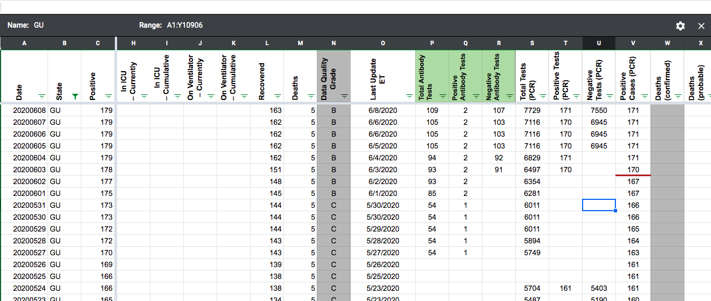
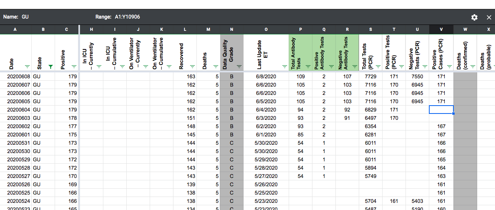

[GU] PCL Historicals
Issue number 684
jesseandersonumd opened this issue on July 28, 2020 at 6:54 am
Labels Historical Data Backfill
State: GU
Current issue: gaps in data reporting on 6/4 and 6/3 for positive cases (PCR). Additionally, we only started reporting positive cases (PCR) on 4/28.
Sources: 6/4 data: https://ghs.guam.gov/jic-release-no-161-end-day-results-zero-test-positive-covid-19-dphss-one-confirmed-positive-gmha 6/3 data: https://ghs.guam.gov/jic-release-no-159-end-day-results-one-tests-positive-covid-19-dphss
Link to source for time series: https://ghs.guam.gov/coronavirus-covid-19?page=1
AFTER (6/4 and 6/3 gaps):

BEFORE (6/4 and 6/3 gaps): 